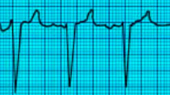
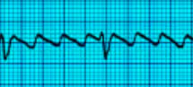
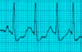
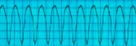
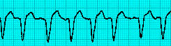
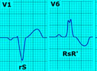
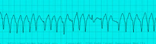
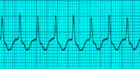
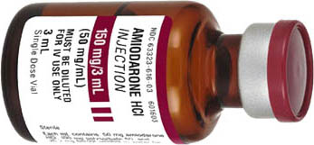
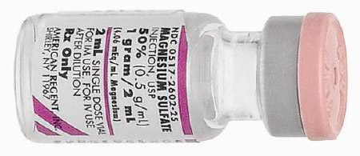

STABLE TACHYCARDIA
Read the unstable tachycardia section first. The patient is in stable tachycardia if he does not have any of the symptoms or signs that put him in the 'unstable' category, ie he DOES NOT have chest pain, shortness of breath, altered mental status, hypotension or pulmonary edema.
Perform the following steps:
- Oxygen by simple face mask
- Connect a 3 lead EKG
- Start an iv line
- Hook up a NIBP
- Connect a pulse oximeter
- Remember to listen to the heart and lungs
- Get a 12 lead EKG if available
- Draw and send venous and arterial blood
The first step is to determine if the QRS complexes are narrow or wide.
The QRS complex is narrow if it is <0.12 sec duration and wide if it is >= 0.12 sec duration. And a quick reminder, each small box on the EKG strip is .04 sec. So if the QRS occupies 3 or more small boxes it is wide complex.
Narrow QRS means it is supraventricular. It could be atrial or junctional.
Once we note that it is narrow QRS tachycardia, the next step is to see if it is regular or irregular.
NARROW AND REGULAR Narrow complex stable tachycardia with regular rhythm:
Possibilities:
- PSVT paroxysmal supraventricular tachycardia (most likely) Rate >150 Abrupt Onset and Offset.
- Sinus Tachycardia Rate >100
- Junctional Tachycardia. This is rare. Digitalis Toxicity can cause this rhythm. Rate >100, gradual onset and offset.
Management:
-
The first step is to try vagal
maneuvers:
- carotid sinus massage OR
- valsalva maneuver (tell patient to bear down or blow out against closed lips)
- If this fails, administer adenosine 6mg rapid IV (follow with 20 cc Normal Saline bolus flush)
- If this fails administer adenosine 12 mg IV
- If this fails control the rate using Diltiazem 15mg IV
- You can repeat Diltiazem 25mg after waiting for 15 minutes
Remember the difference between sinus tachycardia and PSVT. Sinus tachycardia has gradual acceleration and deceleration whereas PSVT is of abrupt onset and then continues persistently. Sinus tachycardia is <150/mt. PSVT rate is >150. Junctional tachycardia rate is >100 and there is no identifiable P waves.
Just a quick note about PSVT : This could be due to AVNRT or AVRT mechanisms. In AVNRT the re-entry loop is confined inside the AV node, whereas in AVRT there is a pathway that passes from atria to ventricle and is outside the AV node. This is also called Wolf Parkinson Syndrome. In both AVRT and AVNRT the AV node completes the reentry pathway that keeps the cycle going, and Adenosine shuts down the circuit by shutting down the AV node.
NARROW AND IRREGULAR Narrow complex stable tachycardia with irregular rhythm:
Possibilities:
- Atrial fibrillation (Afib has no identifiable P waves) 
- Atrial flutter (saw tooth pattern) 
- Multifocal Atrial Tachycardia (at least 3 different types of P waves , different in polarity, size or shape). This is due to abnormal automaticity. Seen in COPD. 
Management:
- Use Diltiazem to slow down the rate. The dose is 15mg IV. Diltiazem has less inotropic effect and is safe in CHF. Controls rate by means of AV block.
- Wait 15 minutes, and if needed use another 15mg of Diltiazem
-
If Flutter / Fibrillation has been
present for >48h:
- Anticoagulate, do a TEE to exclude thrombus in the heart, then do elective cardioversion (50-100J for flutter, 100-200J for fib)
WIDE COMPLEX TACHYCARDIA
Possibilities:
- Ventricular tachycardia (Monomorphic) The complexes are wide and regular, the axis does not change. 
- Polymorphic Ventricular Tachycardia (Torsades De Pointes) (complexes wide, irregular and the axis changes)
-
Atrial fibrillation with Left Bundle
Branch Block. (Observe how the RR
interval keeps changing)

LBBB: observe the characteristics on the 12 lead EKG:V1 has prominent S, but no R. V6 has prominent/notched R but no Q
 -
Atrial fibrillation with Wolf Parkinson
White (the complexes are wide,
IRREGULAR, but unlike TDP the axis does
not change)

And here are the so called 'delta' waves of Wolf Parkinson White, this the 'slur' in the upstroke of the QRS. This may not be evident during Afib.

Management:
- If it is monomorphic regular Ventricular Tachycardia, give Adenosine 6mg rapid IV followed by 20ml NS flush. This may be followed in 1-2 minutes by Adenosine 12mg.
- Amiodarone 150mg in 20 ml D5W IV over 10 minutes. This can be repeated if needed. The maximum you can use during a 24 hour period is 2.2 grams.
-
If Amiodarone is successful, this is the
maintenance dose: 1mg/hr for 6 hours
followed by 0.5mg/hr for upto 72 hours.
Inline filter should be used, and a
glass bottle should be used for
administrations for over 2 hours.
Maximum cumulative dose that can be
given in a 24 h period is 2.2 gm. When
it is time to transition from IV to oral
Amiodarone, the starting dose is 200mg
po q6-8h for one week followed by 200 mg
po q12 for one week followed by 200 mg
po qd.
Amiodarone doses are given as IV push if patient is pulseless.
 -
If you see Torsades de Pointes, use
Magnesium 2gm IV (please remember that
in an unstable patient with TDP, you use
defibrillation).
- Loading dose of 1 to 2 grams mixed in 50 to 100 ml. of D5W IV over 5-60 minutes.
- Maintenance dose is 0.5 to 1 gram per hour IV, titrate to control TDP. 
-
If Atrial Fibrillation is present with
WPW, use Procainamide or Flecainide
(these act on accessory pathway)
Adenosine could be lethal in this
situation.
- Procainamide 100 mg IV at a rate not exceeding 50 mg/min repeated every five minutes as needed to a total dose of 1 g.
- Maintenance infusion 1-4 mg/minute
Magnesium should be used carefully if the patient is in renal failure. Magnesium given rapidly can cause hypotension.
TDP may seen in a setting of alcohol abuse or digitalis toxicity or Tricyclic overdose.
Do NOT use Diltiazem in wide complex tachycardia or WPW.
Do not use Adenosine in WPW, it can lead to Ventricular Fibrillation.
Half life of Adenosine is 9-12 seconds, always use with a 20 cc saline flush so that we can get the medication to the heart.


Read Other Page
Read All Page
Ventricular Fibrillation
It this was an unwitnessed arrest, meaning it did not happen in front of you, you should give him 5 cycles of CPR...
Read More
Infant Cpr
Perform 30 chest compressions. Use two fingers and deliver the compressions over the breastbone, just below the nipple line...
Read More

Cpr General Principles
CPR sequence is Compressions- Airway - Breathing. The only exception is drowning victims where the sequence is...
Read More